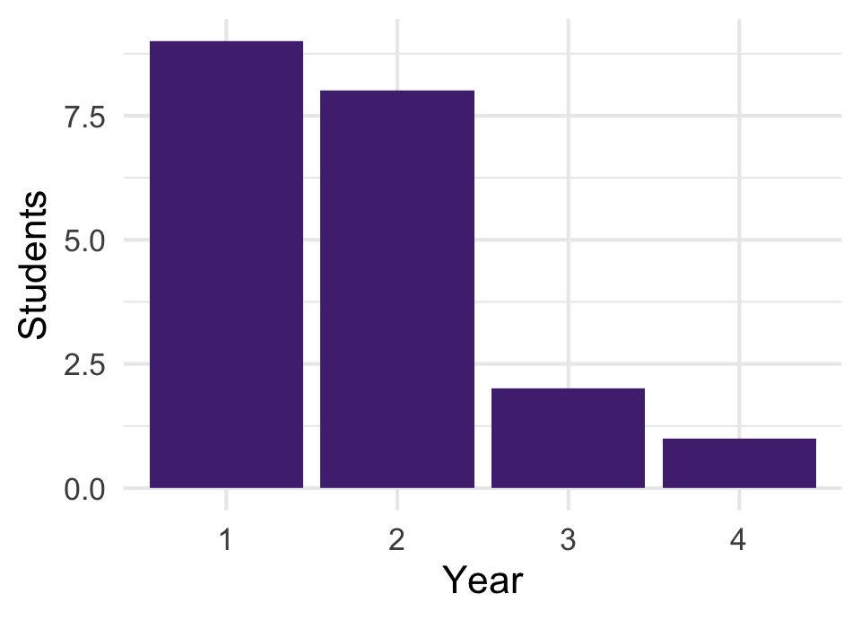
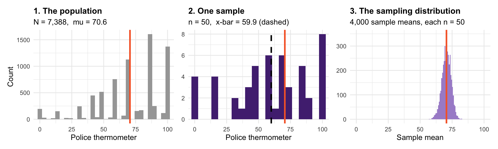
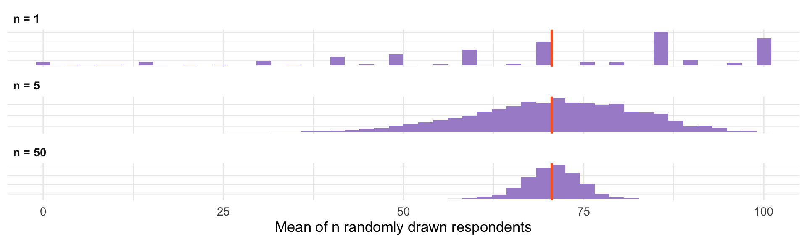
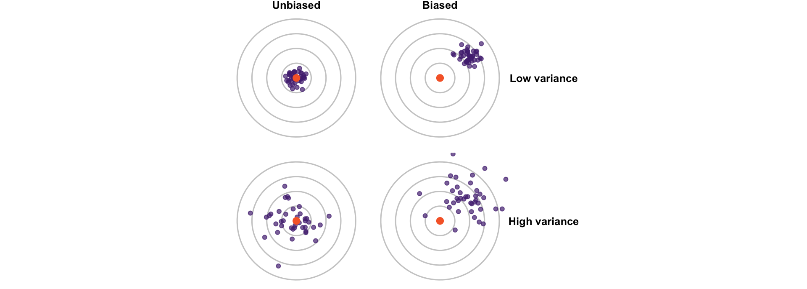
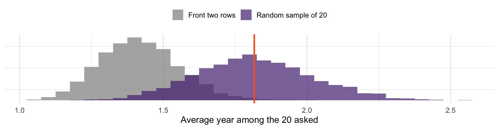

[1] 1.75Where uncertainty comes from
Probability is done. (But always lurking)
Now we switch things up: we have data, and the distribution is unknown
Our key question: what can one sample tell us? We are building to regression. Today we start with the simplest case: one population mean.
You are a TA for POSC 1010, a class of 300. You want the class’s average year (1 = first-year, 4 = senior), so you ask the 20 students in the first two rows.

How good is this estimate? Two separate worries: you may have been unlucky in which 20 you asked, and the front two rows may not look like the class.
Population - the set of units you want to describe. Size \(N\). (All 300 students.)
Sample - the subset you actually observe. Size \(n\). (The 20 in front.)
Parameter - a numerical summary of the population. Fixed, and usually unknown. (The class’s average year, \(\mu\).)
Statistic - a numerical summary of the sample. Known once you have the data, but a different sample would give a different value. (\(\bar{x} =\) 1.75.)
An estimator is a rule for guessing a parameter from a sample. Its value in your data is the estimate. Recall: capital letters are the random version, lowercase the number you computed. So \(\bar{X}\) is the estimator of \(\mu\), and the \(\bar{x}\) you compute is an estimate.
A reminder from earlier:
| Quantity | Population | Sample |
|---|---|---|
| Mean | \(\mu\) | \(\bar{x}\) |
| Standard deviation | \(\sigma\) | \(s\) |
| Proportion | \(p\) | \(\hat{p}\) |
| Regression slope | \(\beta\) | \(\hat{\beta}\) |
Greek for what we want. Latin letters, or a hat, for what we compute from the sample (\(p\) is the usual exception)
Censuses are expensive, slow, and rare
Often the population is hypothetical: Bertrand and Mullainathan’s 4,870 résumés are one sample from all the résumés they could have sent
And a well-drawn sample of 1,500 can tell you a lot about 250 million people
How does it work?
A simple random sample of \(n\) from a population of \(N\):
Every unit has the same chance of being picked: here \(n/N = 20/300\)
Every possible set of 20 students is equally likely
The front two rows fail both tests. Who sits up front is a choice, and it may be related to year.
The randomness is in who gets picked, not in the students. That is what lets us use probability on a fixed population.
Suppose the ANES respondents were the whole population.
Draw a sample of 50. Then draw another:
The first misses by 10.6 points, and the second gives a different number.

These are three different things. Orange is the truth, \(\mu\), in every panel. They are conflated constantly, and downstream analyses depend on keeping them apart.
The population distribution — how ft_police is spread across all respondents. Real, fixed, mostly unobserved.
The sample distribution — how it is spread in your 50. Observed, and a bit lumpy.
The sampling distribution — how \(\bar{x}\) would vary across all the samples you might have drawn: the distribution of the random variable \(\bar{X}\). In real research, never observed.
We can see it here only because we pretended to have the whole population. In practice it is a thought experiment, and it is what lets us attach a margin of error (the “± 3 points” on a poll) to an estimate.
\(\bar{X}\) is a function of random draws, so \(\bar{X}\) is itself a random variable
It has a distribution, a mean, and a variance — like any random variable
Notice the shape: roughly normal, even though the population is not
A later session explains why.
Centered on the truth: each draw is random, so \(E[\bar{X}] = \mu\), as we showed earlier. And its spread is the \(\sigma / \sqrt{n}\) we derived earlier.

\(n = 1\): one random draw has exactly the population’s distribution, so \(E[X_i] = \mu\) and \(\text{Var}(X_i) = \sigma^2\)
Why does n = 50 already look much better? A low average needs many low scorers at once. Highs and lows cancel.
The standard deviation of the sampling distribution has its own name: the standard error
\(SE(\bar{X}) = \sigma / \sqrt{n}\), for independent draws (the assumption behind the earlier derivation)
In practice \(\sigma\) is unknown, so we substitute \(s\) from the sample
\(N\) appears nowhere in this formula. Precision depends on the size of the sample, not the population: that is why 1,500 well-chosen people can describe 250 million.
Standard deviation describes spread in the data. Standard error describes spread in an estimate across samples. Both are standard deviations, of different things.
sample() draws without replacement: once someone is picked, they cannot be picked again. The exact variance is then
\[\text{Var}(\bar{X}) = \frac{\sigma^2}{n} \cdot \underset{\text{finite population correction}}{\frac{N - n}{N - 1}}\]
| Case | n | N | Correction |
|---|---|---|---|
| Our ANES example | 50 | 7,388 | 0.993 |
| A national poll | 1,500 | 250 million | 0.999994 |
| A census | N | N | 0 |
This is the only place \(N\) enters. Unless you sample a large share of the population, the correction is essentially 1: precision depends on \(n\), not \(N\).
\(\sigma / \sqrt{n}\) assumed independent draws. Real surveys often cluster: pick a few places, then interview many people in each.
| Design | Average estimate | Standard error |
|---|---|---|
| Simple random sample of 50 | 70.92 | 3.54 |
| 2 states, 25 respondents each | 70.95 | 4.48 |
Same \(n\) and the same center, but the clustered estimates are 27% more spread out. People in the same state resemble each other, so the 25th person from a state adds less new information than a fresh random draw.
Ignoring clustering makes standard errors too small. We will fix this when we get to regression.

Orange is the truth. Each dot is one study’s estimate.
Write \(\theta\) for any parameter (\(\mu\), \(p\), \(\beta\), …) and \(\widehat{\theta}\) for its estimator. Like \(\bar{X}\), \(\widehat{\theta}\) is a random variable with a sampling distribution.
Bias: \(E[\widehat{\theta}] - \theta\). Is the sampling distribution centered on the truth?
Variance: \(\text{Var}(\widehat{\theta}) = E\big[(\widehat{\theta} - E[\widehat{\theta}])^2\big]\), the same definition as before, applied to the estimator. How much \(\widehat{\theta}\) bounces around from sample to sample. Its square root is the standard error.
Variance is a problem you can buy your way out of by collecting more data
Bias is a problem you cannot. More data just gives you a tighter cluster around the wrong answer.
Recall the badly skewed sample from earlier: more of that sample would never have fixed it. Reweighting with outside information did.
Suppose eagerness to sit up front falls with year: a first-year is 10 times as likely as a senior to be in the front rows.

The truth (orange) is 1.82. Random samples center on it; front-row samples center on 1.42. Asking more front-row students would only tighten the cluster around the wrong answer.
Bias is a property of how the sample was chosen, not of any one sample.
Sampling variability — you happened to draw these people rather than those
Small \(n\), or a population with high \(\sigma\): both feed into \(\sigma / \sqrt{n}\)
Unlike bias, it is easily quantifiable: that is what a standard error is
Literary Digest mailed 10 million straw ballots ahead of the Roosevelt–Landon election
2.4 million were returned: at the time, the largest poll ever conducted
It predicted Landon 57%, Roosevelt 43%
Roosevelt won 62% to 38% of the two-party vote. A 19-point error. But there were 2 million responses! What went wrong?
Coverage bias. The mailing list came from car registrations, telephone directories, and club memberships — in 1936, markers of wealth. The sampled population was not the voting population.
Nonresponse bias. Only a quarter of ballots came back, and the people motivated to return one were not a cross-section of those who received one.
Neither of these is sampling variability. Both are bias.
For a proportion, \(SE(\hat{p}) = \sqrt{p(1-p)/n}\): the binomial variance from earlier, scaled to a share
At \(n = 2{,}400{,}000\) that is about 0.03 percentage points
Their actual error was 19 points — about 600 standard errors
Gallup called the same election correctly with a tiny fraction of that sample, using quota sampling: interviewers filled quotas so the sample matched the electorate’s mix.
\(n\) controls variance. Only design controls bias. A precise answer to the wrong question is still wrong, and a big \(n\) makes you more confident in it.
Online opt-in panels — who volunteers is not who votes
Declining response rates — major surveys now field single-digit response rates
Differential nonresponse — if one side’s supporters are less willing to answer, weighting (the post-stratification from earlier) only helps if you know how they differ
Convenience samples — undergraduates, Mechanical Turk (paid online gig workers), whoever answered your email
Getting representative samples of the population is hard!
One more source worth naming: even a perfect sample gives wrong answers if the instrument is wrong.
Question wording effects, social desirability bias, translation problems
Turnout is overreported in nearly every survey: people say they voted when they did not. Because the error always runs the same direction, it is bias.
As we said earlier: no amount of statistical machinery repairs an invalid measure.
Treat ft_science as a population, built the way we built pop. Compute the true mean. Then draw one sample of 40 and compare.
Use replicate, as we did for sdist, to draw 2,000 samples of 40. What is the mean of those sample means? What is their standard deviation?
Check it against \(\sigma/\sqrt{n}\). Then repeat with \(n = 160\). Did the standard error halve?
A pollster surveys 50,000 people through a website banner ad. Which of today’s problems does the large \(n\) solve, and which does it not?
Read: Blackwell, Ch. 2
Next class: what makes an estimator good — unbiasedness, consistency, efficiency